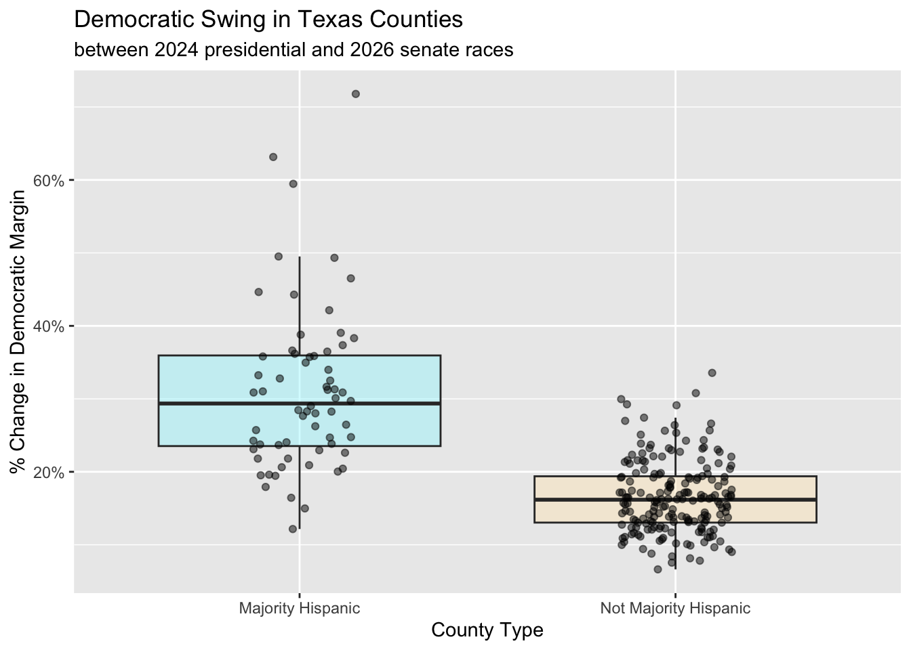
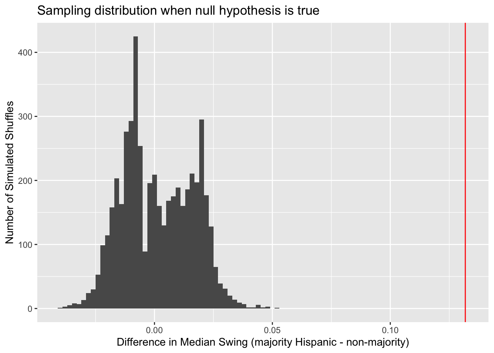
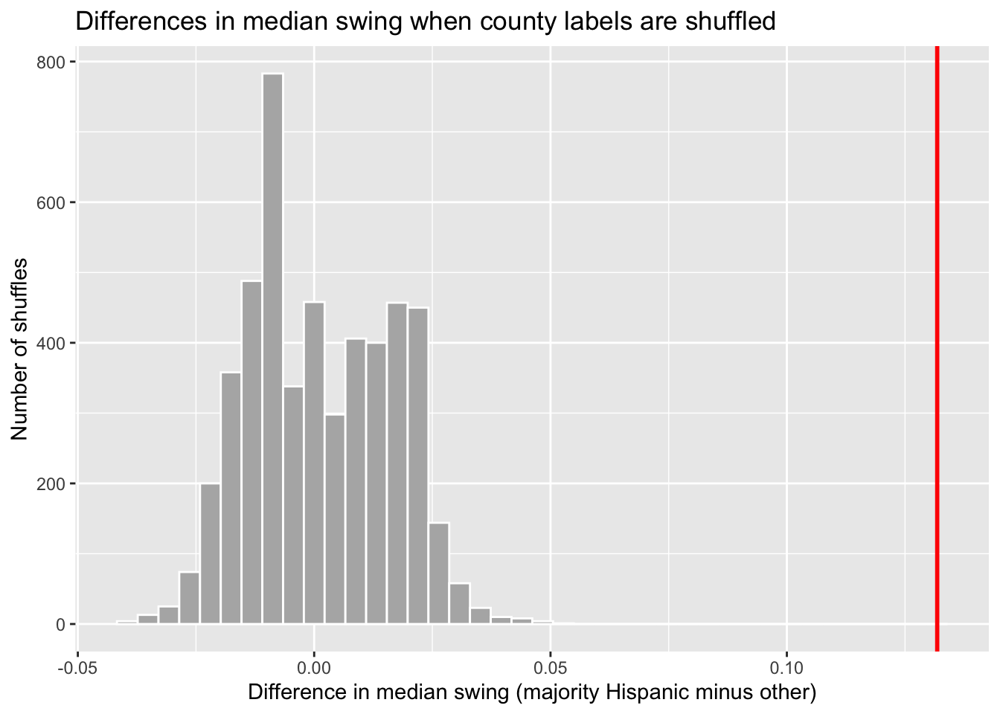

Code
library(tidyverse)Ava Li
November 5, 2026
The following three data sets used for this project were obtained from The Texas Secretary of State and the U.S. Census Bureau:
2026 Senate Results by County (unofficial, Nov 4 2026, 4:48 pm CST) - Texas Secretary of State’s Election Results
2024 Presidential Results by County (Nov 26, 2024) - Texas Secretary of State’s Election Results
Hispanic Population Share by County - U.S. Census Bureau, American Community Survey 5-Year Estimates, Table B03002, accessed via the tidycensus R package
library(tidycensus)
## Hispanic Population Share by County (TX)
hisp <- get_acs(
geography = "county",
state = "TX",
variables = c(total = "B03002_001", hispanic = "B03002_012"),
year = 2024,
survey = "acs5",
output = "wide"
) |>
mutate(hisp_share = hispanicE / totalE,
majority_hisp = hisp_share > 0.5)
write_csv(hisp, "data/tx_hispanic_share.csv")## 2024 Presidential Results by County
pres24_raw <- read_csv("data/TX 24 pres by county.csv")
pres24 <- pres24_raw |>
rename(candidate = "CANDIDATE NAME",
county = "COUNTY NAME",
votes = "TOTAL VOTES PER OFFICE PER COUNTY" ) |>
##mutate(votes = as.numeric(str_remove_all(as.character(votes), ","))) |>
group_by(county) |>
summarize(dem_24 = sum(votes[str_detect(candidate, "HARRIS")]),
rep_24 = sum(votes[str_detect(candidate, "TRUMP")]),
total_24 = sum(votes),
.groups = "drop") |>
mutate (margin_24 = (dem_24 - rep_24) / total_24)
## 2026 Senate Results by County
sen26_raw <- read_csv("data/TX 26 senate by county.csv")
sen26 <- sen26_raw |>
rename(county = "COUNTY NAME",
dem_26 = "JAMES TALARICO",
rep_26 = "KEN PAXTON",
total_26 = "TOTAL VOTES PER OFFICE PER COUNTY") |>
select(county, dem_26, rep_26, total_26) |>
mutate(margin_26 = (dem_26 - rep_26) / total_26)## Joining of Data Frames
hisp <- read_csv("data/tx_hispanic_share.csv") |>
mutate(county = str_to_upper(str_remove(NAME, " County, Texas")),
county = str_replace(county, "^LA SALLE$", "LASALLE")) |>
select(county, GEOID, totalE, hispanicE, hisp_share, majority_hisp)
full_data <- pres24 |>
inner_join(sen26, by = "county") |>
inner_join(hisp, by = "county") |>
mutate(swing = margin_26 - margin_24)In the November 3rd general election, Democrats flipped several Republican-held Senate seats across the country, including in Texas, where James Talarico won the Senate race. This outcome seemed to have been partially due to the state’s heavily Hispanic southern border region, where many counties shifted toward Democrats compared to the 2024 presidential election, when the state largely voted for Trump. Overall, Hispanic residents make up a large share of the Texas population, with 64 of the state’s 254 counties being majority Hispanic.
In this simulation study, I will examine whether majority-Hispanic counties swung toward Democrats more than other Texas counties between the 2024 presidential race and the 2026 Senate race. I measure each county’s swing as the change in the Democratic margin between the two races, then use a permutation test, shuffling which counties are labeled “majority Hispanic,” to see whether the observed difference in median swing is larger than we would expect if county type had nothing to do with it. The answer helps show whether the Democratic gains in Texas were concentrated in majority-Hispanic counties or were spread more evenly across the state.
Exploring the data, we can calculate the swing toward Democrats from the 2024 Presidential election to the 2026 Senate election. A positive swing means more Democratic votes.
# A tibble: 2 × 4
majority_hisp median_swing avg_swing n
<lgl> <dbl> <dbl> <int>
1 TRUE 0.294 0.310 64
2 FALSE 0.162 0.166 190While both majority hispanic and non-majority hispanic counties swung towards the Democrats in the 2026 Senate election, the 64 majority hispanic counties swung more extremely, at almost double the rate than non-majority counties in both a median and average swing.
# A tibble: 10 × 5
county margin_24 margin_26 swing majority_hisp
<chr> <dbl> <dbl> <dbl> <lgl>
1 STARR -0.160 0.558 0.718 TRUE
2 ZAPATA -0.224 0.407 0.631 TRUE
3 MAVERICK -0.185 0.410 0.595 TRUE
4 WEBB -0.0217 0.473 0.495 TRUE
5 HIDALGO -0.0287 0.465 0.493 TRUE
6 DUVAL -0.0977 0.367 0.465 TRUE
7 REEVES -0.369 0.0771 0.446 TRUE
8 CAMERON -0.0580 0.385 0.443 TRUE
9 JIM HOGG 0.0826 0.504 0.421 TRUE
10 CULBERSON -0.169 0.221 0.390 TRUE Arranging the data by counties with the greatest swings, we can see that among the top 10 counties, all are majority hispanic and all are either on or near the southern border.
full_data |>
mutate(county_type = if_else(majority_hisp,
"Majority Hispanic", "Not Majority Hispanic")) |>
ggplot(aes(x = county_type, y = swing, fill = county_type)) +
geom_boxplot(alpha = 0.4, outlier.shape = NA) +
scale_fill_manual(values = c("Majority Hispanic" = "cadetblue1",
"Not Majority Hispanic" = "wheat1")) +
geom_jitter(width = 0.15, alpha = 0.5) +
scale_y_continuous(labels = scales::label_percent()) +
labs(title = "Democratic Swing in Texas Counties",
subtitle = "between 2024 presidential and 2026 senate races",
x = "County Type", y = "% Change in Democratic Margin") +
guides(fill = "none") 
When plotted, the original data shows that the spread of changes in democratic margins is much greater in majority hispanic than non-majority hispanic counties. The differences between the two types of counties becomes more clear, with the median of the majoirty hispanic counties being higher as calculated earlier, and with a
Outcome: Democratic margin in 2026 Senate minus Democratic margin in 2024 presidential, by county Grouping variable: majority-Hispanic counties (>50% hisp per Census ACS) vs. not Test statistic: difference in median swing between groups
The null hypothesis in my simulation is that the group label of Hispanic or Not hispanic for each county is unrelated to the swing of votes in the 2026 Midterm Election.
[1] 0.131809[1] 0null_dist |>
data.frame() |>
ggplot(aes(x = null_dist)) +
geom_histogram(binwidth = 0.002) +
geom_vline(xintercept = obs_diff, color = "red") +
labs(x = "Difference in Median Swing (majority Hispanic - non-majority)",
y = "Number of Simulated Shuffles",
title = "Sampling distribution when null hypothesis is true")
ggplot(tibble(diff = null_dist), aes(x = diff)) +
geom_histogram(bins = 40, fill = "grey70", color = "white") +
geom_vline(xintercept = obs_diff, color = "red", linewidth = 1) +
labs(title = "Differences in median swing when county labels are shuffled",
x = "Difference in median swing (majority Hispanic minus other)",
y = "Number of shuffles")
a description of what insights can be gained from your plot(s) / results//describing each of your plots or tables.
That is, tell the reader what they see when they look at the plot.
end with a description of what you did (3-4 sentences).guide the reader through your analysis.